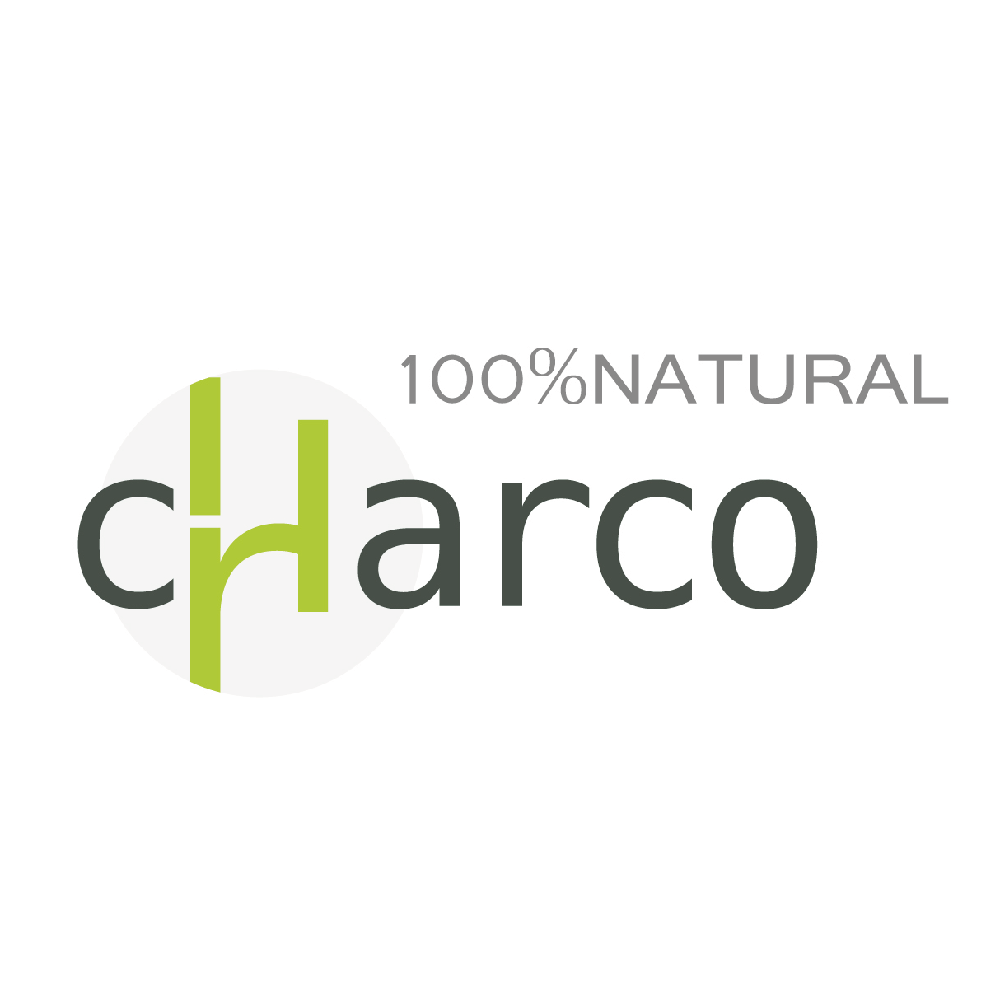

1 分鐘，幫您找到適合的永續農業方案
Q9聯絡方式*
現場兌換獎品需要核對，手機請填正確號碼。
請填寫稱呼與手機（手機請填 09 開頭 10 碼，例如 0912345678）
同意事項
恰口科研企業股份有限公司依《個人資料保護法》蒐集與利用上述資料，保存期間為蒐集目的存續期間。 您可隨時來信 charcote2018@gmail.com 要求查詢、更正或刪除您的資料，不影響本次獎品兌換。
請勾選必填的個資同意項目
感謝您協助恰口科研的農業需求調查
恰口科研 CHARCO 天然植物保護 ‧ 採後保鮮技術 charcote2018@gmail.com